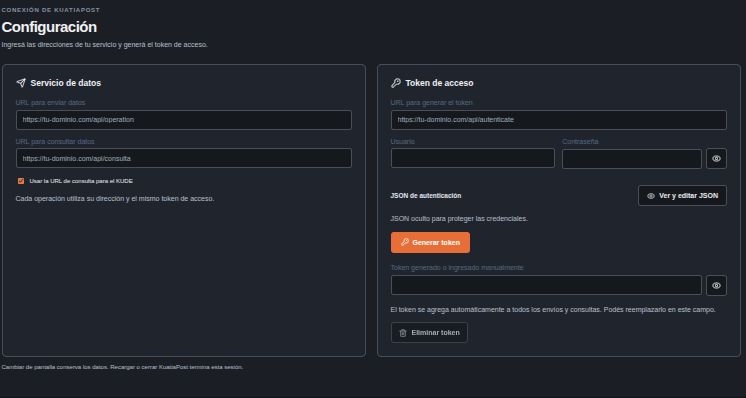
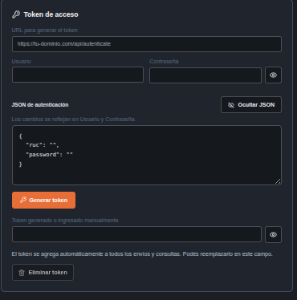
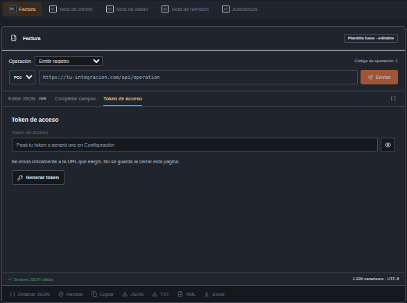
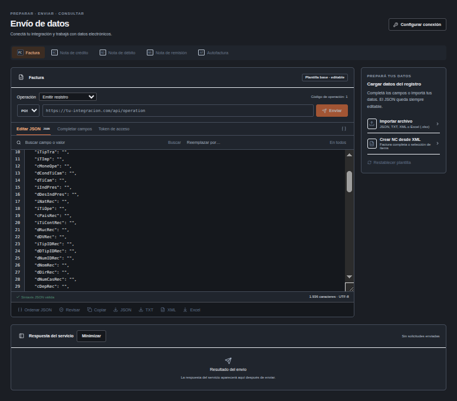
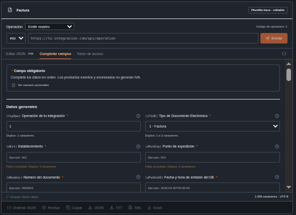
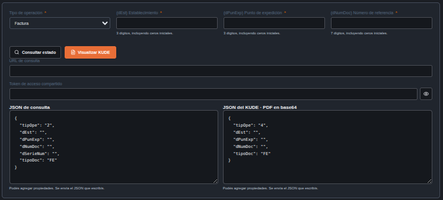
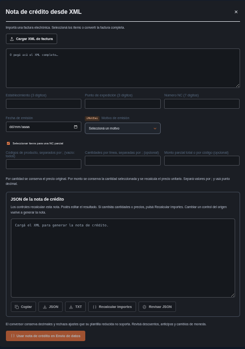
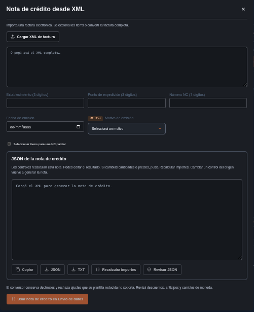
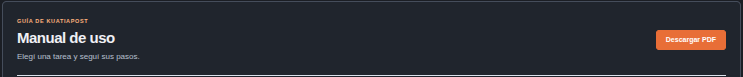

Manual de uso de KuatiaPost
Configuración y token
Conectar KuatiaPost con los servicios que vas a utilizar.

JSON de autenticación visible y editable

- Abrí Configuración desde el menú. Indicá la URL completa para enviar datos, la URL para consultar y la URL para generar el token. Pueden pertenecer a servicios diferentes; no copies una dirección en todos los campos sin verificarla.
- Si consulta y KUDE comparten dirección, marcá Usar la URL de consulta para el KUDE. Si son diferentes, desmarcá la casilla y completá la URL del KUDE.
- Completá Usuario y Contraseña con las credenciales de tu integración. Usuario corresponde a ruc y Contraseña a password en el JSON de autenticación.
- El botón del ojo permite mostrar u ocultar la contraseña. Ver y editar JSON abre el cuerpo de autenticación; ocultarlo no borra los valores.
- El JSON comienza con las claves ruc y password. Podés añadir las propiedades que requiera tu API. Los campos y el JSON se sincronizan cuando el contenido tiene sintaxis válida.
- Pulsá Generar token una sola vez y esperá la respuesta. Si fue correcta, el token se comparte con los envíos y las consultas durante esta sesión.
- Podés ingresar otro token manualmente, verlo con el ojo o eliminarlo con el botón correspondiente. Su duración depende del servicio que lo genera; KuatiaPost no renueva el token automáticamente.
Resultado
Las direcciones y el token quedan disponibles al cambiar de apartado.
Avisos
- Si no aparece el token, revisá la respuesta de autenticación y la ruta configurada para localizarlo. Un resultado HTTP correcto no garantiza que el cuerpo contenga el token.
- No incluyas credenciales reales en capturas, archivos o ejemplos que compartas. Mostrar el JSON permite ver su contraseña.
Botones y controles
Usar la URL de consulta para el KUDE
- Para qué sirve
- Selecciona si consulta y KUDE utilizan la misma dirección.
- Cómo usarlo
- Marcala cuando tu servicio use una única URL; desmarcala para informar otra URL del KUDE.
- Resultado
- El formulario muestra u oculta la dirección independiente del KUDE.
- Detalle
- La casilla no prueba la conexión ni cambia el contrato de la API.
Ojo de la contraseña
- Para qué sirve
- Alterna entre contraseña oculta y visible.
- Cómo usarlo
- Pulsalo para comprobar lo escrito; pulsalo otra vez para ocultarlo.
- Resultado
- Cambia la presentación del campo, sin modificar su valor.
- Detalle
- No envía credenciales ni elimina la contraseña; el JSON visible puede mostrarla igualmente.
Ver y editar JSON / Ocultar JSON
- Para qué sirve
- Abre o cierra el editor de autenticación.
- Cómo usarlo
- Usalo para revisar ruc y password o añadir las propiedades que solicite tu servicio.
- Resultado
- El JSON válido sincroniza Usuario y Contraseña. Ocultarlo conserva su contenido.
- Detalle
- Con sintaxis inválida aparece un aviso; corregilo antes de generar el token.
Generar token
- Para qué sirve
- Envía el JSON de autenticación por POST a la URL del token.
- Cómo usarlo
- Completá la dirección y las credenciales; después pulsá una vez.
- Resultado
- Durante la solicitud muestra Generando; si la respuesta permite localizarlo, guarda el token compartido.
- Detalle
- No realiza una emisión. La vigencia depende del servicio y no hay renovación automática.
Ojo del token
- Para qué sirve
- Muestra u oculta el token en su campo.
- Cómo usarlo
- Usalo para comprobar o copiar el valor; ocultalo al terminar.
- Resultado
- El token permanece igual y continúa disponible para las solicitudes.
- Detalle
- Mostrarlo no lo valida ni extiende su vigencia. No compartas capturas que lo incluyan.
Eliminar token
- Para qué sirve
- Vacía el token compartido de la sesión.
- Cómo usarlo
- Pulsalo cuando quieras retirar el acceso actual.
- Resultado
- Envios y consultas dejan de disponer de ese valor; el botón se desactiva cuando está vacío.
- Detalle
- No elimina la contraseña ni revoca el token en el servicio externo; solo lo retira de KuatiaPost.
Token en el área de envío
Ingresar o revisar el token sin salir de Envío de datos.

- Abrí la pestaña Token de acceso dentro de Envío de datos.
- Pegá el token si ya lo obtuviste de tu servicio. El valor se comparte con la configuración y las consultas.
- Usá el botón del ojo para mostrar u ocultar el valor. Ocultarlo no lo elimina.
- Si todavía no lo tenés, pulsá Generar token para abrir Configuración y completar la autenticación.
- Volvé a Editar JSON o Completar campos para continuar. Cambiar de pestaña conserva los datos de la sesión.
Resultado
El token queda disponible para las solicitudes de la sesión.
Avisos
- La vigencia del token depende de tu servicio. Si expiró, generá otro y comprobá el resultado antes de repetir un envío.
Botones y controles
Token de acceso
- Para qué sirve
- Abre la pestaña del token dentro del área de envío.
- Cómo usarlo
- Usala para revisar o pegar el token sin cambiar el JSON.
- Resultado
- Muestra el campo compartido con Configuración y Consulta y KUDE.
- Detalle
- Editar el valor modifica el token de toda esta sesión, no solo el del registro visible.
Ojo del token
- Para qué sirve
- Muestra u oculta el valor ingresado en esta pestaña.
- Cómo usarlo
- Pulsalo para inspeccionar el token.
- Resultado
- Solo cambia su visibilidad.
- Detalle
- No genera un token nuevo ni comprueba si expiró.
Generar token desde Envío de datos
- Para qué sirve
- Abre Configuración para preparar la autenticación.
- Cómo usarlo
- Usalo cuando todavía no tengas un token o necesites obtener otro.
- Resultado
- Se muestra Configuración; allí debes pulsar Generar token después de completar los datos.
- Detalle
- El botón de esta pestaña es un acceso a Configuración: no envía por sí solo las credenciales.
Preparar y enviar datos
Preparar una solicitud mediante una plantilla y enviarla a la dirección seleccionada.

- Abrí Envío de datos y elegí Factura, Nota de crédito, Nota de débito, Remisión o Autofactura. Cada tipo utiliza sus propios campos y conserva su borrador mientras trabajás.
- En Operación elegí Emitir registro para utilizar la plantilla. El método de emisión es POST. Verificá la URL mostrada antes de enviar.
- En Completar campos informá establecimiento (dEst) y punto de expedición (dPunExp) con tres dígitos, y número (dNumDoc) con siete. Conservá los ceros iniciales.
- Completá la fecha, moneda y los datos aplicables al tipo elegido. Un asterisco indica que el campo es obligatorio para la selección actual. Las ayudas junto al campo explican las reglas disponibles.
- Los cambios del formulario se reflejan en Editar JSON. Podés modificar el JSON libremente; mantené la sintaxis válida para volver a completar los campos.
- Pulsá Revisar y corregí los puntos indicados debajo del editor. Volvé a revisar después de cualquier cambio.
- Para emitir, pulsá Enviar y comprobá la dirección y el tipo antes de aceptar la confirmación. La respuesta del servicio aparece en el panel de respuesta.
Resultado
Se muestra el resultado de la solicitud realizada. Preparar, revisar o exportar no envía datos.
Avisos
- La revisión aplica las reglas disponibles en KuatiaPost; la aceptación definitiva depende de tu integración.
- No repitas una emisión solo porque tardó en responder: consultá su estado antes de intentar nuevamente.
Botones y controles
Configurar conexión
- Para qué sirve
- Abre el apartado Configuración.
- Cómo usarlo
- Pulsalo antes de preparar una solicitud si faltan URL o token.
- Resultado
- Podés ajustar el servicio y regresar al área de envío.
- Detalle
- Abrir la configuración no borra el borrador ni prueba las direcciones.
Factura / Nota de crédito / Nota de débito / Remisión / Autofactura
- Para qué sirve
- Selecciona el tipo de registro y su plantilla.
- Cómo usarlo
- Elegí el tipo correspondiente antes de completar datos.
- Resultado
- Recupera el borrador de ese tipo si existe; en caso contrario carga su plantilla. Activa emisión y POST.
- Detalle
- Los borradores se mantienen mientras no recargues o cierres; verificá el tipo activo antes de enviar.
Operación: Emitir registro / Solicitud personalizada
- Para qué sirve
- Alterna entre plantilla de emisión y cuerpo libre.
- Cómo usarlo
- Elegí emisión para el formulario por tipo, o personalizada para preparar el contrato de tu servicio.
- Resultado
- Recupera el borrador del modo elegido y establece POST como método inicial.
- Detalle
- La solicitud personalizada no usa la confirmación ni la revisión automática del botón Enviar de las plantillas; revisala manualmente.
Método POST / GET
- Para qué sirve
- Selecciona el método de la solicitud.
- Cómo usarlo
- Usá POST para enviar un cuerpo. GET está habilitado solo en Solicitud personalizada.
- Resultado
- POST envía el JSON; GET consulta la URL sin enviar el cuerpo del editor.
- Detalle
- Los parámetros de GET deben estar en la URL cuando tu API los requiera.
Enviar
- Para qué sirve
- Realiza la solicitud a la URL que aparece junto al botón.
- Cómo usarlo
- Verificá URL, método, token y datos; luego pulsá una vez.
- Resultado
- En emisión revisa campos y pide confirmación; con autorización envía y actualiza Respuesta del servicio.
- Detalle
- Se desactiva mientras hay una solicitud o falta URL. Un HTTP exitoso no sustituye el estado de aprobación.
Aceptar / Cancelar en la confirmación de envío
- Para qué sirve
- Confirma o interrumpe la emisión preparada.
- Cómo usarlo
- Leé el tipo y la dirección del diálogo antes de aceptar.
- Resultado
- Aceptar continúa el envío. Cancelar conserva el borrador y no envía.
- Detalle
- Es un diálogo del navegador; su apariencia puede variar. La confirmación se utiliza en modo de emisión.
Editar JSON
- Para qué sirve
- Muestra el editor de texto del cuerpo.
- Cómo usarlo
- Usalo para revisar la solicitud completa o añadir propiedades.
- Resultado
- Podés editar claves, valores, objetos y listas.
- Detalle
- Una sintaxis inválida impide las acciones que necesitan interpretar el JSON.
Completar campos
- Para qué sirve
- Muestra el formulario relacionado con el cuerpo JSON.
- Cómo usarlo
- Usalo para completar datos mediante campos y selecciones.
- Resultado
- Las modificaciones se reflejan en el JSON cuando el contenido es válido.
- Detalle
- En solicitud personalizada muestra las propiedades existentes; para crear una nueva clave, añadila en el editor.
Formatear JSON: icono de llaves
- Para qué sirve
- Reorganiza visualmente un JSON válido mediante su interpretación y serialización.
- Cómo usarlo
- Usalo con un cuerpo que sea un objeto JSON sin registros adjuntos.
- Resultado
- Agrega sangría al cuerpo del editor.
- Detalle
- Es distinto de Ordenar JSON: no separa registros y puede normalizar números al interpretarlos. Para conservar sus literales, utilizá Ordenar JSON.
Receptor y campos condicionales
Completar los datos que corresponden a la naturaleza del receptor y la operación.

- En Naturaleza del receptor elegí contribuyente o no contribuyente según el caso real. Esta selección modifica los datos de identificación que se solicitan.
- Para contribuyente, completá el RUC, el dígito verificador y el tipo de contribuyente. Para no contribuyente, revisá el tipo de identificación y su número; informar un RUC no reemplaza esa identificación.
- En Tipo de operación elegí el código correspondiente: B2B, B2C, B2G o B2F. No cambies el tipo solo para evitar un aviso: debe coincidir con la operación.
- Informá el país que corresponda y revisá su compatibilidad con el receptor y el tipo de operación. Una operación local y una operación al exterior no se completan de la misma manera.
- Completá nombre, dirección y ubicación cuando sean aplicables. No inventes códigos geográficos: utilizá los valores del catálogo de tu integración.
- Cuando una selección admita Otro y aparezca una descripción, escribí el detalle requerido respetando la longitud indicada. La descripción no sustituye el código seleccionado.
- Los campos opcionales sin contenido pueden omitirse al prepararlos desde el formulario. Si escribís null o propiedades adicionales directamente en el JSON, revisalas antes de enviar: editar libremente no implica que tu API las admita.
Resultado
La identificación y los campos condicionales corresponden al caso seleccionado.
Avisos
- Con iNatRec igual a 2 e iTipIDRec igual a 1, un dNumIDRec vacío puede producir un error de identificación. Corregí el dato real; no lo copies automáticamente desde otro campo.
- Las opciones Innominado y exterior tienen condiciones específicas. Leé la ayuda del campo y los resultados de Revisar.
Botones y controles
Ayuda: icono de interrogación
- Para qué sirve
- Muestra el motivo y un ejemplo de formato del campo.
- Cómo usarlo
- Pulsá el icono junto al dato que no entendés.
- Resultado
- Aparece una explicación local sin salir del formulario.
- Detalle
- La ayuda corresponde a las reglas disponibles; no realiza una consulta de inteligencia artificial.
Ver campos opcionales
- Para qué sirve
- Alterna la visualización de campos opcionales vacíos.
- Cómo usarlo
- Marcala si necesitás completar un dato adicional aplicable.
- Resultado
- Muestra más campos; desmarcarla vuelve a ocultar los vacíos que no son requeridos.
- Detalle
- La casilla no completa valores ni obliga a informar todos los campos.
Selecciones de naturaleza, operación, identificación y Otros
- Para qué sirve
- Guarda el código elegido y ajusta las condiciones del formulario.
- Cómo usarlo
- Seleccioná según el receptor y la operación reales.
- Resultado
- El JSON recibe el código y se muestran las descripciones adicionales cuando correspondan.
- Detalle
- Cambiar una selección puede quitar datos incompatibles. Revisá el JSON después de cambiarla.
Productos, pagos e importes
Completar los ítems y las condiciones de pago sin confundir códigos, cantidades o importes.
- En el grupo de productos usá Añadir producto para crear otra fila. Completá cada ítem por separado: código, descripción, unidad, cantidad y los importes que correspondan al tipo de registro.
- Una unidad de medida es un código del catálogo. Elegí su opción y comprobá que describa la unidad real del producto. Conservá los códigos que tengan ceros iniciales.
- Informá la afectación y la tasa de IVA aplicables. Exento y exonerado son opciones distintas; no agregues IVA gravado a un ítem que no lo lleva.
- En la condición de operación elegí contado o crédito. En contado completá los pagos; en crédito revisá el plazo o las cuotas según la opción seleccionada.
- En tipo de pago elegí efectivo, cheque, tarjeta u otra opción del catálogo. Cheque habilita el número y el banco; tarjeta habilita los datos de marca y procesamiento aplicables.
- Si elegís Otro para el tipo de pago o la tarjeta, completá la descripción adicional cuando aparezca. No rellenes datos de cheque si el pago es en efectivo.
- Revisá el JSON y comprobá cantidades, precios, pagos e importes. La edición del JSON general no garantiza un recálculo automático. Para una nota convertida desde XML utilizá Recalcular importes dentro del conversor.
Resultado
Cada producto y pago conserva sus propios datos; el JSON muestra la solicitud que prepararás.
Avisos
- No uses separadores de miles dentro de valores numéricos. Conservá la forma y la precisión admitidas por cada campo.
- Un formulario completo no sustituye la revisión de los cálculos y la respuesta de tu API.
Botones y controles
Añadir producto
- Para qué sirve
- Agrega una fila nueva al grupo de productos.
- Cómo usarlo
- Pulsalo para cargar otro producto sin reemplazar el anterior.
- Resultado
- Aparece una fila con los campos de la plantilla del tipo activo.
- Detalle
- Completá sus valores y revisá importes; añadir una fila no realiza una emisión.
Eliminar producto
- Para qué sirve
- Quita del JSON la fila de producto indicada.
- Cómo usarlo
- Pulsalo solo en el producto que quieras retirar.
- Resultado
- Desaparece esa fila y sus datos.
- Detalle
- No pide confirmación individual. Revisá después los totales y pagos relacionados.
Añadir registro
- Para qué sirve
- Agrega una fila a un grupo repetible distinto de productos.
- Cómo usarlo
- Usalo para otro pago, cuota o asociación cuando el formulario muestre ese grupo.
- Resultado
- Se incorpora una fila basada en la plantilla del grupo.
- Detalle
- No significa enviar ni registrar en el servicio; es una fila dentro del JSON.
Eliminar registro
- Para qué sirve
- Quita la fila correspondiente de un grupo repetible.
- Cómo usarlo
- Usalo para retirar un pago, cuota o asociación que no corresponde.
- Resultado
- Se elimina esa fila del borrador.
- Detalle
- La acción no cancela una operación previamente enviada ni recalcula por sí sola todos los importes.
Selección de tipo de pago, tarjeta y afectación
- Para qué sirve
- Guarda el código de la opción elegida.
- Cómo usarlo
- Elegí la opción real para mostrar sus campos aplicables.
- Resultado
- Cheque permite sus datos; tarjeta sus datos de procesamiento; Otro permite su descripción cuando corresponda.
- Detalle
- Los datos incompatibles pueden retirarse al cambiar de opción. Comprobá también el JSON y la revisión.
Solicitud personalizada y edición
Revisar o adaptar un JSON recibido sin depender de una plantilla.
- En Envío de datos elegí Solicitud personalizada. Pegá el JSON en Editar JSON; podés añadir, modificar o quitar propiedades.
- Si el contenido incluye un registro de error después del JSON, utilizá Ordenar JSON para separarlo antes de trabajar con el formulario.
- Abrí Completar campos para ver las propiedades del JSON válido. Los objetos anidados y las listas se muestran con sus campos; los ítems existentes se conservan.
- Podés editar las filas de las listas, añadir o quitar ítems. Si necesitás una propiedad que todavía no aparece, añadila en Editar JSON y volvé al formulario.
- Usá Buscar para localizar un campo o un valor en el editor. Escribí el texto de reemplazo y pulsá En todos si querés reemplazar todas sus coincidencias.
- El reemplazo es textual: puede modificar claves y valores. Comprobá el resultado y volvé a Revisar para detectar una sintaxis inválida o campos afectados.
- POST es el método predeterminado. GET está disponible en solicitudes personalizadas y no envía el cuerpo JSON; si tu servicio espera parámetros en la dirección, incorporalos en la URL según su contrato.
- Antes de enviar una solicitud personalizada, comprobá por tu cuenta la dirección, el método y la revisión. Este modo utiliza directamente el JSON ingresado y no aplica la confirmación de emisión de las plantillas.
Resultado
El JSON personalizado se refleja en el formulario y permanece editable.
Avisos
- Para revisar campos obligatorios de una emisión, informá un iTiDE reconocido. Para otros contratos solo se pueden comprobar las reglas disponibles.
- Las propiedades de una integración pueden ser diferentes de las de otra: no las renombres únicamente para hacer desaparecer un aviso.
Botones y controles
Buscar
- Para qué sirve
- Localiza una coincidencia del texto ingresado en el editor.
- Cómo usarlo
- Escribí un campo o valor y pulsá Buscar, o Enter en el buscador.
- Resultado
- Selecciona la coincidencia siguiente y desplaza el editor hacia ella; al llegar al final vuelve al inicio.
- Detalle
- La búsqueda ignora mayúsculas y minúsculas. Si no encuentra el texto, muestra un aviso.
En todos
- Para qué sirve
- Reemplaza todas las apariciones exactas del texto de búsqueda.
- Cómo usarlo
- Completá Buscar y Reemplazar por antes de pulsarlo.
- Resultado
- Actualiza el texto completo del editor. Un reemplazo vacío elimina las coincidencias.
- Detalle
- El reemplazo distingue mayúsculas y minúsculas; puede cambiar nombres de claves y valores. Volvé a revisar el JSON.
Añadir ítem
- Para qué sirve
- Agrega una fila a una lista del JSON personalizado.
- Cómo usarlo
- Pulsalo al final del grupo donde necesitás otra fila.
- Resultado
- Si hay una fila, toma su estructura y vacía valores; si la lista está vacía, añade un objeto vacío.
- Detalle
- Para dar campos a un objeto vacío, editá el JSON. No agrega una plantilla fiscal automáticamente.
Eliminar ítem
- Para qué sirve
- Retira la fila elegida de una lista personalizada.
- Cómo usarlo
- Pulsalo en el ítem que querés quitar.
- Resultado
- Se actualiza la lista en el JSON.
- Detalle
- No tiene confirmación ni deshacer automático; verificá que quitaste la fila correcta.
Verdadero / Falso y selecciones de catálogo
- Para qué sirve
- Edita valores booleanos o códigos existentes del JSON.
- Cómo usarlo
- Elegí el valor apropiado en cada lista.
- Resultado
- Verdadero/Falso mantiene un booleano; el catálogo modifica el valor del campo correspondiente.
- Detalle
- Un valor personalizado fuera del catálogo puede mostrarse como valor del JSON: verificá si tu API lo admite.
Ordenar JSON y registros de error
Leer un JSON compacto y relacionar los errores de una respuesta con sus campos.
- Pegá el JSON de la solicitud, aunque esté en una sola línea. Pulsá Ordenar JSON: agrega sangría y saltos de línea, conservando claves, valores y el orden original.
- También se admite el JSON seguido de un registro con fecha y nivel DEBUG, ERROR, INFO, WARNING o WARN. La solicitud debe ir primero y estar completa.
- El JSON formateado queda en el editor. El registro se conserva separado en Ver registro separado; no forma parte del cuerpo que se enviará.
- Debajo se muestra Resultado de la última ordenación. Los mensajes de la API aparecen con el campo informado, por ejemplo dNumIDRec, y las observaciones de las reglas disponibles.
- Una clave no reconocida se señala con su ruta, incluyendo el ítem correspondiente. El aviso no la elimina: confirmá si pertenece al contrato de tu API.
- Si aparece un carácter dañado, como el carácter de reemplazo Unicode, corregí el texto desde su origen. Ordenar no recupera letras que se perdieron al copiar o exportar.
- Corregí los valores y volvé a ordenar o revisar. El resultado de la última ordenación describe el contenido de ese momento; podés minimizarlo o cerrarlo.
Resultado
El cuerpo queda legible y la respuesta adjunta se consulta por separado.
Avisos
- No se corrigen automáticamente nombres como FormaPago, ni se eliminan campos como fk_fac. Un nombre no reconocido requiere revisión del contrato.
- Si hay texto adicional sin un registro reconocido, o faltan llaves o comillas, se informa el problema y se conserva el texto original del editor.
Botones y controles
Ordenar JSON
- Para qué sirve
- Da sangría al JSON conservando sus literales y separa un registro adjunto reconocido.
- Cómo usarlo
- Pegá la solicitud completa, sola o antes de un registro con fecha y nivel admitido.
- Resultado
- Deja solo la solicitud en el editor y muestra avisos y el registro separado debajo.
- Detalle
- No cambia el orden de claves, no corrige nombres ni elimina propiedades desconocidas.
Resultado de la última ordenación
- Para qué sirve
- Despliega o minimiza el resultado de ordenar.
- Cómo usarlo
- Pulsá el título de ese panel para alternar su presentación.
- Resultado
- Muestra u oculta los avisos sin cambiar el JSON.
- Detalle
- El resultado corresponde al momento de ordenar. Volvé a ejecutarlo después de editar.
Ver registro separado
- Para qué sirve
- Despliega el registro retirado del cuerpo al ordenar.
- Cómo usarlo
- Pulsalo si necesitás leer el error completo que copiaste.
- Resultado
- Muestra el texto del registro y permite cerrarlo pulsando de nuevo.
- Detalle
- Es una referencia de la respuesta anterior: no es una consulta nueva a la API.
Cerrar revisión
- Para qué sirve
- Retira el panel del resultado de ordenar.
- Cómo usarlo
- Pulsalo cuando ya leíste los avisos y no necesitás el registro en pantalla.
- Resultado
- Oculta el resultado y su registro separado.
- Detalle
- No restaura el registro dentro del editor. Guardá una copia si necesitás conservarlo.
Importar, copiar y exportar
Cargar un registro y guardar una copia para continuar o compartirlo.
- Utilizá Importar archivo y seleccioná JSON, TXT con JSON o XML, XML o Excel .xlsx. El archivo debe pesar menos de 10 MB. No se admite .xls.
- Una vez cargado, verificá el tipo de registro y compará el JSON con el archivo original. Los campos importados no deben darse por correctos solo porque el archivo pudo leerse.
- Un XML puede usar grupos y nombres diferentes de los que espera tu API. Revisá la conversión antes de enviar; importar no realiza una emisión.
- Para Excel, utilizá la estructura exportada por KuatiaPost: Cabecera y hojas de grupos, como Detalles o Pagos, con el respaldo JSON. No es un importador de cualquier planilla comercial.
- Editá datos simples sin incorporar fórmulas o celdas de fecha como sustituto de los textos esperados. Los códigos y sus ceros iniciales deben conservarse.
- Copiar lleva el JSON al portapapeles. JSON y TXT descargan una copia del cuerpo; Excel exporta un registro con sus grupos. No se trabaja con una exportación masiva desde este apartado.
- XML descarga el formato de intercambio de KuatiaPost para recuperar los datos posteriormente. No constituye un XML firmado ni reemplaza el archivo producido por tu integración.
- Antes de compartir un archivo, abrilo y comprobá qué datos contiene. La descarga permanece en tu equipo aunque cierres la sesión.
Resultado
Obtenés una copia del registro o un JSON importado que podés revisar y editar.
Avisos
- Un archivo con extensión correcta puede contener una estructura incompatible. Leé el mensaje de importación y comprobá su contenido.
- Exportar o copiar no verifica la aprobación del registro.
Botones y controles
Importar archivo
- Para qué sirve
- Abre el selector de archivos y carga el archivo elegido.
- Cómo usarlo
- Seleccioná JSON, TXT, XML o Excel .xlsx con la estructura compatible y tamaño admitido.
- Resultado
- Reemplaza el cuerpo actual con los datos importados, elige un tipo reconocido y activa emisión.
- Detalle
- Importar reemplaza el borrador visible sin confirmación. Guardá antes una copia si necesitás conservarlo.
Copiar en el editor principal
- Para qué sirve
- Copia el texto actual del cuerpo al portapapeles.
- Cómo usarlo
- Usalo para pegarlo en otra herramienta o compartir una copia revisada.
- Resultado
- Muestra un aviso si la copia se completó.
- Detalle
- Copia exactamente el texto, incluso si tiene sintaxis inválida. El navegador puede impedir el acceso al portapapeles.
JSON en el editor principal
- Para qué sirve
- Descarga el cuerpo interpretado como archivo .json.
- Cómo usarlo
- Usalo para guardar una copia estructurada cuando el JSON es válido.
- Resultado
- Aplica la preparación de campos opcionales y guarda el archivo.
- Detalle
- Puede omitir o ajustar campos según las reglas de preparación; compará el archivo si necesitás la copia literal del editor.
TXT en el editor principal
- Para qué sirve
- Descarga una representación formateada del cuerpo como texto.
- Cómo usarlo
- Usalo cuando necesites un archivo .txt con contenido JSON.
- Resultado
- Guarda el cuerpo interpretado con sangría.
- Detalle
- Requiere un objeto JSON válido; no es una descarga literal de cualquier texto pegado.
XML en el editor principal
- Para qué sirve
- Exporta el cuerpo como XML de intercambio de KuatiaPost.
- Cómo usarlo
- Usalo para guardar datos que luego quieras recuperar con el importador.
- Resultado
- Descarga un archivo .xml con el formato propio de intercambio.
- Detalle
- No firma, no emite y no genera el XML final de tu servicio.
Excel en el editor principal
- Para qué sirve
- Exporta un registro y, si existe, la respuesta actual a .xlsx.
- Cómo usarlo
- Usalo para revisar o guardar la información en hojas de cálculo.
- Resultado
- Genera las hojas del formato de KuatiaPost con los grupos y su respaldo JSON.
- Detalle
- Requiere JSON válido y prepara los campos opcionales; la respuesta incluida puede pertenecer a una solicitud anterior si aún no enviaste el borrador actual.
Crear NC desde XML
- Para qué sirve
- Abre el conversor de factura a nota de crédito.
- Cómo usarlo
- Pulsalo cuando la factura de origen esté disponible en XML.
- Resultado
- Se muestra el diálogo de conversión sobre el área de envío.
- Detalle
- Abrir el conversor no importa automáticamente un archivo ni envía una nota.
Restablecer plantilla
- Para qué sirve
- Sustituye el cuerpo actual por la plantilla del tipo activo.
- Cómo usarlo
- Usalo para empezar ese registro nuevamente.
- Resultado
- Pide confirmación; al aceptar restaura la plantilla y limpia los errores de revisión.
- Detalle
- Se pierden los campos editados del cuerpo visible. En personalizada también utiliza la plantilla del tipo activo, no un objeto vacío.
Aceptar / Cancelar al restablecer
- Para qué sirve
- Confirma o evita reemplazar el borrador.
- Cómo usarlo
- Leé la pregunta del navegador antes de responder.
- Resultado
- Aceptar restaura la plantilla; Cancelar mantiene el JSON actual.
- Detalle
- No borra el token ni revoca una operación enviada.
Consultar estado y KUDE
Consultar un registro existente y obtener su representación en PDF.

- Abrí Consulta y KUDE. Elegí el tipo: Factura, Nota de crédito, Nota de débito, Remisión o Autofactura.
- Completá establecimiento y punto de expedición con tres dígitos y número con siete. Los cambios se reflejan inmediatamente en la solicitud correspondiente.
- Comprobá la URL de consulta y el token compartido. Si el servicio del KUDE es diferente, configurá su URL por separado.
- Consultá el estado y leé el valor informado por la integración. Un HTTP 200 o un status de éxito indican que hubo respuesta, pero no sustituyen el estado de aprobación.
- Podés editar el JSON de consulta y el del KUDE por separado. Al cambiar sus campos desde el formulario, comprobá nuevamente el JSON resultante.
- Pulsá Visualizar KUDE. El servicio debe devolver el PDF en base64 dentro de la propiedad kude, directamente o dentro de message.
- Cuando el PDF sea válido, utilizá el visor para revisar su contenido y el botón de descarga para guardarlo. La solicitud no utiliza formato ticket.
Resultado
Se muestra el estado recibido y, si está disponible, el PDF del KUDE.
Avisos
- Si no se encuentra el registro, revisá tipo, numeración y ambiente de la URL. No presupongas que el registro está rechazado solo porque no se pudo consultar.
- Si el servicio devuelve texto, una URL o un archivo distinto de PDF, no se podrá mostrar como KUDE.
Botones y controles
Tipo de operación de la consulta
- Para qué sirve
- Selecciona el tipo del registro que vas a buscar.
- Cómo usarlo
- Elegí Factura, Nota de crédito, Nota de débito, Remisión o Autofactura.
- Resultado
- Actualiza las solicitudes de consulta y KUDE con el código correspondiente.
- Detalle
- Comprobá la numeración y el JSON si previamente los editaste manualmente.
Consultar estado
- Para qué sirve
- Envía la solicitud de estado por POST con el token compartido.
- Cómo usarlo
- Completá tipo, numeración y URL; pulsá para consultar.
- Resultado
- Actualiza el resultado recibido; una nueva consulta sustituye la respuesta visible y retira el visor anterior.
- Detalle
- Consultar no emite ni cancela. Leé el estado retornado, además del HTTP.
Visualizar KUDE
- Para qué sirve
- Solicita el PDF en base64 a la URL configurada.
- Cómo usarlo
- Pulsalo cuando necesites ver la representación del registro.
- Resultado
- Si el servicio devuelve un PDF válido, se abre el visor y aparecen sus acciones de descarga.
- Detalle
- Un error o un base64 inválido no se transforma en un PDF. La consulta no modifica el registro externo.
Ojo del token compartido
- Para qué sirve
- Muestra u oculta el token del campo de consulta.
- Cómo usarlo
- Usalo para comprobar el valor antes de consultar.
- Resultado
- Alterna su visibilidad sin cambiarlo.
- Detalle
- Editar el valor cambia el token compartido con el resto de la sesión.
Ver respuesta
- Para qué sirve
- Despliega la respuesta JSON cuando no hay estado reconocido ni PDF.
- Cómo usarlo
- Usalo para leer el mensaje devuelto por la integración.
- Resultado
- Muestra o minimiza el cuerpo recibido.
- Detalle
- Es una respuesta ya recibida, no vuelve a consultar al abrirla.
Descargar PDF del KUDE
- Para qué sirve
- Guarda el PDF recibido por la consulta.
- Cómo usarlo
- Pulsalo después de verificar el contenido del visor.
- Resultado
- El navegador descarga el KUDE a tu equipo.
- Detalle
- Solo aparece con un PDF válido. El archivo permanece aunque cierres la sesión.
Abrir PDF
- Para qué sirve
- Abre el KUDE recibido en otra pestaña.
- Cómo usarlo
- Usalo para verlo con los controles del lector de PDF del navegador.
- Resultado
- Muestra el mismo archivo recibido con mayor espacio.
- Detalle
- No hace una nueva solicitud al servicio. El visor del navegador puede ofrecer zoom, impresión y descarga propios.
Nota de crédito desde XML
Generar una nota completa o parcial y revisar el JSON antes de utilizarlo.

Nota completa: selección parcial desactivada

- En Envío de datos abrí Crear NC desde XML. Seleccioná el archivo de la factura de origen o pegá su XML completo.
- Completá el establecimiento, punto de expedición y número de la nueva nota. Estos datos no se heredan como valores predeterminados de la factura.
- Elegí el Motivo de emisión en la lista. El código elegido se refleja en iMotEmi dentro del JSON generado.
- Para trabajar con una parte, activá Seleccionar ítems para una NC parcial. Escribí los códigos separados por punto y coma; vacío significa todos los códigos disponibles.
- Por cantidad: informá las cantidades en el orden de los códigos seleccionados, separadas por punto y coma. Se utiliza el precio original para calcular los importes correspondientes.
- Por monto: ingresá un monto total o los montos por código según la selección. Se conserva la cantidad seleccionada y se recalcula el precio unitario para representar el importe; un monto total se distribuye entre los ítems seleccionados.
- Revisá el JSON de la nota: podés editarlo directamente, copiarlo o descargarlo en JSON o TXT. Si cambiás cantidades o precios dentro de ese JSON, pulsá Recalcular importes para actualizar sus totales.
- Pulsá Revisar JSON y corregí los avisos. Utilizá Usar nota de crédito en Envío de datos para trasladar el JSON visible al editor principal. Después comprobá URL, token y datos antes de enviarlo.
Resultado
La nota queda preparada en el editor principal. Convertir o trasladar el JSON no la envía.
Avisos
- Cambiar el XML o los controles de conversión vuelve a generar el JSON: puede reemplazar las modificaciones manuales del conversor.
- No se permiten cantidades o montos superiores a los disponibles. La precisión de los cálculos puede impedir representar ciertos importes.
- Recalcular importes no admite descuentos o anticipos distintos de cero en esta conversión. Revisá esos casos antes de utilizarla.
Botones y controles
Cerrar conversor: X
- Para qué sirve
- Cierra el diálogo de la nota de crédito.
- Cómo usarlo
- Pulsalo para volver al área de envío sin trasladar el resultado.
- Resultado
- El diálogo desaparece; no envía ni copia la nota al editor principal.
- Detalle
- XML y controles permanecen en la sesión; las ediciones manuales locales del JSON del conversor no se conservan al cerrar y volver a abrir. Copialas o descargalas antes.
Cargar XML de factura
- Para qué sirve
- Abre el selector del XML de origen.
- Cómo usarlo
- Seleccioná la factura que querés usar como referencia.
- Resultado
- El conversor carga el texto y trata de generar la nota a partir del XML y los controles actuales.
- Detalle
- Reemplazar el archivo vuelve a generar el JSON. Revisá que sea la factura correcta.
Motivo de emisión
- Para qué sirve
- Selecciona el código iMotEmi de la nota.
- Cómo usarlo
- Elegí el motivo real en la lista; no escribas su número de memoria.
- Resultado
- Actualiza el código dentro del resultado generado.
- Detalle
- Cambiar el motivo regenera la nota y puede sustituir las modificaciones manuales hechas en su JSON.
Seleccionar ítems para una NC parcial
- Para qué sirve
- Activa o desactiva los controles de selección parcial.
- Cómo usarlo
- Marcala para indicar códigos, cantidades o montos; desmarcala para la conversión completa.
- Resultado
- Muestra u oculta esos controles y vuelve a generar el resultado.
- Detalle
- Los límites y cálculos dependen del origen. Revisá el resultado después de cambiar esta casilla.
Copiar en el conversor
- Para qué sirve
- Copia el JSON visible de la nota al portapapeles.
- Cómo usarlo
- Usalo para conservar o compartir una copia antes de cambiar los controles.
- Resultado
- Copia el texto que editaste en ese diálogo.
- Detalle
- Solo se habilita con resultado disponible. Copiar no comprueba la sintaxis ni envía la nota.
JSON / TXT en el conversor
- Para qué sirve
- Descarga la nota visible en formato .json o .txt.
- Cómo usarlo
- Usalos para guardar el resultado fuera de la sesión.
- Resultado
- Interpreta el objeto JSON y descarga una representación formateada con la extensión elegida.
- Detalle
- Si la edición manual dejó una sintaxis inválida, muestra un error y no descarga el archivo.
Recalcular importes
- Para qué sirve
- Actualiza los importes y totales a partir de las cantidades y precios del JSON visible.
- Cómo usarlo
- Pulsalo después de editar cantidades o precios directamente en la nota.
- Resultado
- Sustituye los importes calculados y los subtotales en el resultado editable.
- Detalle
- No cambia automáticamente una cantidad para justificar un monto manual. No admite descuentos ni anticipos distintos de cero en esta conversión.
Revisar JSON
- Para qué sirve
- Comprueba sintaxis y reglas disponibles de la nota de crédito.
- Cómo usarlo
- Usalo después de completar o recalcular el resultado.
- Resultado
- Muestra debajo los puntos que requieren revisión, o informa que no detectó problemas.
- Detalle
- No envía, no aprueba ni corrige valores automáticamente. Revisá otra vez después de editar.
Usar nota de crédito en Envío de datos
- Para qué sirve
- Traslada el JSON visible al editor principal.
- Cómo usarlo
- Pulsalo cuando quieras continuar con el envío de la nota preparada.
- Resultado
- Activa el tipo Nota de crédito, el modo emisión y el área de envío; luego cierra el conversor.
- Detalle
- Requiere un objeto JSON válido con iTiDE igual a 5. No envía: todavía debes revisar y pulsar Enviar.
Revisión, respuestas y errores
Distinguir problemas de los datos, del acceso y de la conexión.
- Pulsá Revisar debajo del editor. Los campos faltantes y las observaciones aparecen en una lista que podés desplegar o minimizar.
- Corregí cada campo señalado y revisá nuevamente. Si pegaste un JSON personalizado de emisión, el tipo iTiDE permite aplicar las reglas disponibles de ese tipo.
- Después de enviar, revisá tanto el código HTTP como el contenido de Respuesta. El servicio puede devolver un mensaje de error aunque la conexión haya terminado correctamente.
- Los mensajes asociados a un campo indican qué dato revisar. Un error de estructura, como una lista esperada, requiere comprobar el nombre y la forma del grupo en el contrato de la API.
- Los errores de acceso pueden requerir generar otro token o verificar las credenciales. Los de conexión requieren comprobar URL, disponibilidad del servicio y permisos del navegador.
- La solicitud puede interrumpirse si el servicio no responde en 45 segundos. No interpretes ese corte como una aprobación o un rechazo: consultá el estado antes de volver a emitir.
- La respuesta puede minimizarse y desplegarse. Los avisos breves desaparecen después de unos segundos; los resultados de revisión permanecen mientras no se edite el cuerpo o se cierre su panel.
Resultado
Podés ubicar el origen del problema y decidir qué corregir antes de repetir una acción.
Avisos
- Verde identifica una acción completada; amarillo una revisión pendiente; rojo un fallo. Leé siempre el texto para entender su alcance.
- Si compartís un registro de error con soporte, retirale contraseñas y tokens antes de enviarlo.
Botones y controles
Revisar en el editor principal
- Para qué sirve
- Comprueba el JSON y las reglas implementadas del tipo reconocido.
- Cómo usarlo
- Pulsalo antes de enviar o después de corregir un campo.
- Resultado
- Muestra debajo la lista de observaciones o el resultado sin problemas detectados.
- Detalle
- No consulta al servicio, no recalcula todos los importes y no garantiza la aceptación definitiva.
Título del resultado de Revisión
- Para qué sirve
- Minimiza o despliega las observaciones de Revisar.
- Cómo usarlo
- Pulsá la cabecera de la lista cuando necesites ganar espacio.
- Resultado
- Oculta o muestra los detalles sin cambiar el cuerpo.
- Detalle
- Editar el JSON limpia esa revisión; pulsá Revisar otra vez para actualizarla.
Minimizar / Desplegar en Respuesta del servicio
- Para qué sirve
- Oculta o muestra el contenido de la respuesta del envío.
- Cómo usarlo
- Usalo para trabajar con más espacio o volver a leer el resultado.
- Resultado
- Conserva la respuesta recibida aunque esté minimizada.
- Detalle
- No cierra la sesión, no cancela una solicitud ni elimina datos del servicio externo.
Cerrar mensaje: X
- Para qué sirve
- Retira el aviso temporal visible.
- Cómo usarlo
- Pulsalo después de leer su texto.
- Resultado
- Oculta ese aviso inmediatamente.
- Detalle
- No corrige el error ni quita los resultados de revisión. Los avisos también desaparecen solos después de unos segundos.
Navegación, tema y sesión
Trabajar entre apartados y comprender cuándo se conservan los datos.
- El menú permite ir a Envío de datos, Consulta y KUDE, Configuración y Manual de uso. Cambiar de apartado mantiene los datos de la sesión.
- Los borradores de emisión se conservan por tipo; Solicitud personalizada mantiene su propio borrador. Al cambiar de tipo, comprobá el encabezado y el JSON activos.
- El botón de luna arriba a la derecha activa el tema oscuro. El botón de sol vuelve al tema claro. Cambiar el tema no modifica los campos.
- Los datos, credenciales, token y respuestas se conservan solo mientras esta sesión está abierta. Recargar o cerrar la pestaña inicia una sesión vacía; no se guardan durante 24 horas.
- Cada pestaña mantiene su propia memoria. Los archivos que descargaste permanecen en tu equipo y el servicio externo puede conservar los datos enviados según su funcionamiento.
- Al terminar, cerrá la pestaña. No dejes una sesión con credenciales visibles en un equipo compartido.
- En Manual de uso elegí una sección del índice. Los números sobre la ilustración muestran las zonas explicadas; Descargar PDF guarda esta guía completa.
Resultado
Podés navegar sin perder el borrador mientras no recargues o cierres.
Avisos
- Las capturas muestran los controles visibles; no contienen credenciales reales.
- El manual explica el uso del programa; no reemplaza el contrato de cada servicio externo.
Botones y controles
Logo de KuatiaPost
- Para qué sirve
- Vuelve al área Envío de datos.
- Cómo usarlo
- Pulsalo desde cualquier apartado para regresar al editor.
- Resultado
- Cambia la vista conservando la sesión.
- Detalle
- No recarga la página ni inicia un registro nuevo.
Envío de datos en el menú
- Para qué sirve
- Abre el editor y las plantillas.
- Cómo usarlo
- Usalo para preparar, revisar o enviar solicitudes.
- Resultado
- Muestra el borrador activo.
- Detalle
- Cambiar de apartado no borra lo que escribiste.
Consulta y KUDE en el menú
- Para qué sirve
- Abre el formulario de consulta.
- Cómo usarlo
- Usalo para verificar un registro existente y obtener su KUDE.
- Resultado
- Muestra las solicitudes de estado y PDF.
- Detalle
- Abrir el apartado no ejecuta la consulta; debes pulsar su acción.
Configuración en el menú
- Para qué sirve
- Abre las direcciones y la autenticación.
- Cómo usarlo
- Usalo para cambiar las URL, credenciales o token.
- Resultado
- Muestra los valores de esta sesión.
- Detalle
- Los cambios afectan las solicitudes posteriores. No se guardan al recargar o cerrar.
Manual de uso en el menú
- Para qué sirve
- Abre esta guía.
- Cómo usarlo
- Usalo cuando quieras conocer una función o un botón.
- Resultado
- Muestra el índice y la sección seleccionada del manual.
- Detalle
- No descarga el PDF automáticamente ni envía tus datos.
Luna / Sol
- Para qué sirve
- Alterna entre modo oscuro y modo claro.
- Cómo usarlo
- Pulsá la luna para activar el oscuro y el sol para volver al claro.
- Resultado
- Cambia los colores de la interfaz.
- Detalle
- No modifica el JSON ni el token. La sesión no persiste después de recargar.
Cómo consultar y descargar esta guía
Encontrar una explicación y guardar el manual completo.

- Abrí Manual de uso desde el menú.
- Elegí la sección que querés consultar en el índice. Cada sección incluye pasos, resultados y avisos.
- Pulsá un número sobre la captura para ver qué zona explica. Podés ampliar la captura cuando necesites leer un control pequeño.
- Las vistas complementarias muestran otros estados de la misma pantalla, como el JSON de autenticación visible o una nota completa.
- Pulsá Descargar PDF para guardar todas las secciones. El archivo no contiene los datos ni credenciales de tu sesión.
Resultado
Podés consultar la guía dentro de KuatiaPost o guardarla como PDF.
Avisos
- Las capturas sirven como referencia de los controles. El índice y el contenido de esta entrega se actualizaron respecto de la versión fotografiada.
Botones y controles
Secciones numeradas del índice
- Para qué sirve
- Selecciona la explicación de una tarea.
- Cómo usarlo
- Pulsá el nombre de la sección que necesitás consultar.
- Resultado
- Actualiza captura, pasos, avisos y catálogo de controles; selecciona la primera zona de la captura.
- Detalle
- Es navegación del manual, no ejecuta acciones de la pantalla ilustrada.
Números sobre la captura
- Para qué sirve
- Seleccionan una zona ilustrada.
- Cómo usarlo
- Pulsá un recuadro numerado para conocer qué grupo de controles identifica.
- Resultado
- Actualiza la leyenda debajo de la imagen y resalta la zona.
- Detalle
- Los números no son los botones reales: no envían, no generan token y no modifican el JSON.
Ampliar captura
- Para qué sirve
- Abre la imagen de referencia en otra pestaña.
- Cómo usarlo
- Usalo si el texto o los controles de la captura son pequeños.
- Resultado
- Permite consultar la imagen a su tamaño original.
- Detalle
- Es una imagen, no una pantalla operativa. Podés usar el zoom del navegador.
Imagen complementaria
- Para qué sirve
- Abre ampliada una captura adicional.
- Cómo usarlo
- Pulsá la imagen bajo su título, como JSON de autenticación visible.
- Resultado
- Se muestra esa referencia en otra pestaña.
- Detalle
- No cambia el estado de Configuración ni del conversor.
Descargar PDF del manual
- Para qué sirve
- Descarga el manual completo de KuatiaPost.
- Cómo usarlo
- Pulsalo para consultar la guía fuera del sistema.
- Resultado
- Guarda el PDF con todas las secciones, capturas y explicaciones.
- Detalle
- No incluye tu borrador, respuestas, contraseña ni token; si el archivo no se puede cargar, muestra un mensaje.